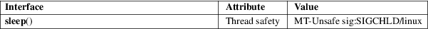

sleep − sleep for a specified number of seconds
Standard C library (libc, −lc)
#include <unistd.h>
unsigned int sleep(unsigned int seconds);
sleep() causes the calling thread to sleep either until the number of real-time seconds specified in seconds have elapsed or until a signal arrives which is not ignored.
Zero if the requested time has elapsed, or the number of seconds left to sleep, if the call was interrupted by a signal handler.
For an explanation of the terms used in this section, see attributes(7).

On Linux, sleep() is implemented via nanosleep(2). See the nanosleep(2) man page for a discussion of the clock used.
On some systems, sleep() may be implemented using alarm(2) and SIGALRM (POSIX.1 permits this); mixing calls to alarm(2) and sleep() is a bad idea.
POSIX.1-2008.
POSIX.1-2001.
Using longjmp(3) from a signal handler or modifying the handling of SIGALRM while sleeping will cause undefined results.
sleep(1), alarm(2), nanosleep(2), signal(2), signal(7)